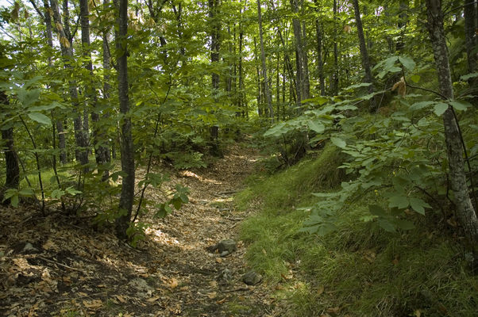

La Torre del Partitoio
La torre del Partitoio, o della Serra o del Cerreto, era un castello, costruito nel Medioevo, a monte di San Marcello Pisotiese per garantire la sicurezza di quell’insediamento, posto in un’ottima posizione al riparo dai venti freddi, ma con una scarsa visibilità.
La torre del Partitoio, oggi in proprietà privata, era costituita da una torre, una cinta muraria e un fossato ed era collegata a vista con altri luoghi fortificati: San Marcello Pistoiese, Castel di Mura e la Rocca della Sicurana (oggi nota come le torri di Popiglio). Una delle strade, che partivano da San Marcello Pistoiese per attraversare l’Appennino, passava vicino alla torre.